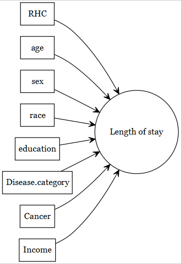

Predictive question-1
Working with a Predictive question using RHC
This tutorial delves into processing and understanding the RHC dataset, which pertains to patients in the intensive care unit. The dataset is particularly centered around the implications of using right heart catheterization (RHC) in the early phases of care, with a focus on comparing two patient groups: those who received the RHC procedure and those who did not. The key outcome being analyzed is the 30-day survival rate. We will use this as an example to explain how to work with a predictive research question to build the analytic data.
(Connors et al. 1996) published an article in JAMA. The article is about managing or guiding therapy for the critically ill patients in the intensive care unit. They considered a number of health-outcomes such as
- length of stay (hospital stay; measured continuously)
- death within certain period (death at any time up to 180 Days; measured as a binary variable)
The original article was concerned about the association of right heart catheterization (RHC) use during the first 24 hours of care in the intensive care unit and the health-outcomes mentioned above.
But we will use this data as a case study for our prediction modelling. Traditional PICOT framework is designed primarily for clinical questions related to interventions, so when applying it to other areas like predictive modeling, some creative adaptation is needed.
| Aspect | Description |
|---|---|
| P | Patients who are critically ill |
| I | Not applicable, as we are dealing with a prediction model here |
| C | Not applicable, as we are dealing with a prediction model here |
| O | in-hospital mortality |
| T | Between 1989 to 1994 (see the JAMA paper) |
We are interested in developing a prediction model for the length of stay.
Data download
Data is freely available from Vanderbilt Biostatistics, variable list is available here, and the article is freely available from researchgate.
Let us download the dataset and save it for later use.
Creating analytic data
Now, we show the process of preparing analytic data, so that the variables generally match with the way the authors were coded in the original article. Below we show the process of creating the analytic data.
Add column for outcome: length of stay
Show the code
# Length.of.Stay = date of discharge - study admission date
ObsData$Length.of.Stay <- ObsData$dschdte - ObsData$sadmdte
# Length.of.Stay = date of death - study admission date if date of discharge not available
ObsData$Length.of.Stay[is.na(ObsData$Length.of.Stay)] <-
ObsData$dthdte[is.na(ObsData$Length.of.Stay)] -
ObsData$sadmdte[is.na(ObsData$Length.of.Stay)]Recoding column for outcome: death
Here we use the ifelse function to create a categorical variable. Other related functions are cut, car.
Let us recode our outcome variable as a binary variable:
Remove unnecessary outcomes
Our next task is to remove unnecessary outcomes:
There are multiple ways to drop variables from a dataset. E.g., without using any package and using the select function from the dplyr package.
Remove unnecessary and problematic variables
Now we will drop unnecessary and problematic variables:
Basic data cleanup
Now we will do some basic cleanup.
We an use the lapply function to convert all categorical variables to factors at once. Not that a similar function to lapply is sapply. The main difference is that sapply attempts to convert the result into a vector or matrix, while lapply returns a list.
Show the code
# convert all categorical variables to factors
factors <- c("cat1", "ca", "death", "cardiohx", "chfhx",
"dementhx", "psychhx", "chrpulhx", "renalhx",
"liverhx", "gibledhx", "malighx", "immunhx",
"transhx", "amihx", "sex", "dnr1", "ninsclas",
"resp", "card", "neuro", "gastr", "renal", "meta",
"hema", "seps", "trauma", "ortho", "race",
"income")
ObsData[factors] <- lapply(ObsData[factors], as.factor)
# convert RHC.use (RHC vs. No RHC) to a binary variable
ObsData$RHC.use <- ifelse(ObsData$swang1 == "RHC", 1, 0)
ObsData <- dplyr::select(ObsData, !swang1)
# Categorize the variables to match with the original paper
ObsData$age <- cut(ObsData$age, breaks=c(-Inf, 50, 60, 70, 80, Inf),
right=FALSE)
ObsData$race <- factor(ObsData$race, levels=c("white","black","other"))
ObsData$sex <- as.factor(ObsData$sex)
ObsData$sex <- relevel(ObsData$sex, ref = "Male")
ObsData$cat1 <- as.factor(ObsData$cat1)
levels(ObsData$cat1) <- c("ARF","CHF","Other","Other","Other",
"Other","Other","MOSF","MOSF")
ObsData$ca <- as.factor(ObsData$ca)
levels(ObsData$ca) <- c("Metastatic","None","Localized (Yes)")
ObsData$ca <- factor(ObsData$ca, levels=c("None", "Localized (Yes)",
"Metastatic"))Rename variables
Show the code
# Rename the variables
names(ObsData) <- c("Disease.category", "Cancer", "Death", "Cardiovascular",
"Congestive.HF", "Dementia", "Psychiatric", "Pulmonary",
"Renal", "Hepatic", "GI.Bleed", "Tumor",
"Immunosupperssion", "Transfer.hx", "MI", "age", "sex",
"edu", "DASIndex", "APACHE.score", "Glasgow.Coma.Score",
"blood.pressure", "WBC", "Heart.rate", "Respiratory.rate",
"Temperature", "PaO2vs.FIO2", "Albumin", "Hematocrit",
"Bilirubin", "Creatinine", "Sodium", "Potassium", "PaCo2",
"PH", "Weight", "DNR.status", "Medical.insurance",
"Respiratory.Diag", "Cardiovascular.Diag",
"Neurological.Diag", "Gastrointestinal.Diag", "Renal.Diag",
"Metabolic.Diag", "Hematologic.Diag", "Sepsis.Diag",
"Trauma.Diag", "Orthopedic.Diag", "race", "income",
"Length.of.Stay", "RHC.use")
# Save the dataset
saveRDS(ObsData, file = "Data/researchquestion/rhcAnalytic.RDS")Notations
let us introduce with some notations:
| Notations | Example in RHC study |
|---|---|
| \(Y_1\): Observed outcome | length of stay |
| \(Y_2\): Observed outcome | death within 3 months |
| \(L\): Covariates | See below |
Basic data exploration
Dimension
Let us the how many rows and columns we have:
Comprehensive summary
Let us see the summary statistics of the variables:
To see the comprehensive summary of the variables, we can use the skim function form skimr package or describe function from rms package
Show the code
| Name | ObsData |
| Number of rows | 5735 |
| Number of columns | 52 |
| _______________________ | |
| Column type frequency: | |
| factor | 31 |
| numeric | 21 |
| ________________________ | |
| Group variables | None |
Variable type: factor
| skim_variable | n_missing | complete_rate | ordered | n_unique | top_counts |
|---|---|---|---|---|---|
| Disease.category | 0 | 1 | FALSE | 4 | ARF: 2490, MOS: 1626, Oth: 1163, CHF: 456 |
| Cancer | 0 | 1 | FALSE | 3 | Non: 4379, Loc: 972, Met: 384 |
| Death | 0 | 1 | FALSE | 2 | 1: 3722, 0: 2013 |
| Cardiovascular | 0 | 1 | FALSE | 2 | 0: 4722, 1: 1013 |
| Congestive.HF | 0 | 1 | FALSE | 2 | 0: 4714, 1: 1021 |
| Dementia | 0 | 1 | FALSE | 2 | 0: 5171, 1: 564 |
| Psychiatric | 0 | 1 | FALSE | 2 | 0: 5349, 1: 386 |
| Pulmonary | 0 | 1 | FALSE | 2 | 0: 4646, 1: 1089 |
| Renal | 0 | 1 | FALSE | 2 | 0: 5480, 1: 255 |
| Hepatic | 0 | 1 | FALSE | 2 | 0: 5334, 1: 401 |
| GI.Bleed | 0 | 1 | FALSE | 2 | 0: 5550, 1: 185 |
| Tumor | 0 | 1 | FALSE | 2 | 0: 4419, 1: 1316 |
| Immunosupperssion | 0 | 1 | FALSE | 2 | 0: 4192, 1: 1543 |
| Transfer.hx | 0 | 1 | FALSE | 2 | 0: 5073, 1: 662 |
| MI | 0 | 1 | FALSE | 2 | 0: 5535, 1: 200 |
| age | 0 | 1 | FALSE | 5 | [-I: 1424, [60: 1389, [70: 1338, [50: 917 |
| sex | 0 | 1 | FALSE | 2 | Mal: 3192, Fem: 2543 |
| DNR.status | 0 | 1 | FALSE | 2 | No: 5081, Yes: 654 |
| Medical.insurance | 0 | 1 | FALSE | 6 | Pri: 1698, Med: 1458, Pri: 1236, Med: 647 |
| Respiratory.Diag | 0 | 1 | FALSE | 2 | No: 3622, Yes: 2113 |
| Cardiovascular.Diag | 0 | 1 | FALSE | 2 | No: 3804, Yes: 1931 |
| Neurological.Diag | 0 | 1 | FALSE | 2 | No: 5042, Yes: 693 |
| Gastrointestinal.Diag | 0 | 1 | FALSE | 2 | No: 4793, Yes: 942 |
| Renal.Diag | 0 | 1 | FALSE | 2 | No: 5440, Yes: 295 |
| Metabolic.Diag | 0 | 1 | FALSE | 2 | No: 5470, Yes: 265 |
| Hematologic.Diag | 0 | 1 | FALSE | 2 | No: 5381, Yes: 354 |
| Sepsis.Diag | 0 | 1 | FALSE | 2 | No: 4704, Yes: 1031 |
| Trauma.Diag | 0 | 1 | FALSE | 2 | No: 5683, Yes: 52 |
| Orthopedic.Diag | 0 | 1 | FALSE | 2 | No: 5728, Yes: 7 |
| race | 0 | 1 | FALSE | 3 | whi: 4460, bla: 920, oth: 355 |
| income | 0 | 1 | FALSE | 4 | Und: 3226, $11: 1165, $25: 893, > $: 451 |
Variable type: numeric
| skim_variable | n_missing | complete_rate | mean | sd | p0 | p25 | p50 | p75 | p100 | hist |
|---|---|---|---|---|---|---|---|---|---|---|
| edu | 0 | 1 | 11.68 | 3.15 | 0.00 | 10.00 | 12.00 | 13.00 | 30.00 | |
| DASIndex | 0 | 1 | 20.50 | 5.32 | 11.00 | 16.06 | 19.75 | 23.43 | 33.00 | |
| APACHE.score | 0 | 1 | 54.67 | 19.96 | 3.00 | 41.00 | 54.00 | 67.00 | 147.00 | |
| Glasgow.Coma.Score | 0 | 1 | 21.00 | 30.27 | 0.00 | 0.00 | 0.00 | 41.00 | 100.00 | |
| blood.pressure | 0 | 1 | 78.52 | 38.05 | 0.00 | 50.00 | 63.00 | 115.00 | 259.00 | |
| WBC | 0 | 1 | 15.65 | 11.87 | 0.00 | 8.40 | 14.10 | 20.05 | 192.00 | |
| Heart.rate | 0 | 1 | 115.18 | 41.24 | 0.00 | 97.00 | 124.00 | 141.00 | 250.00 | |
| Respiratory.rate | 0 | 1 | 28.09 | 14.08 | 0.00 | 14.00 | 30.00 | 38.00 | 100.00 | |
| Temperature | 0 | 1 | 37.62 | 1.77 | 27.00 | 36.09 | 38.09 | 39.00 | 43.00 | |
| PaO2vs.FIO2 | 0 | 1 | 222.27 | 114.95 | 11.60 | 133.31 | 202.50 | 316.62 | 937.50 | |
| Albumin | 0 | 1 | 3.09 | 0.78 | 0.30 | 2.60 | 3.50 | 3.50 | 29.00 | |
| Hematocrit | 0 | 1 | 31.87 | 8.36 | 2.00 | 26.10 | 30.00 | 36.30 | 66.19 | |
| Bilirubin | 0 | 1 | 2.27 | 4.80 | 0.10 | 0.80 | 1.01 | 1.40 | 58.20 | |
| Creatinine | 0 | 1 | 2.13 | 2.05 | 0.10 | 1.00 | 1.50 | 2.40 | 25.10 | |
| Sodium | 0 | 1 | 136.77 | 7.66 | 101.00 | 132.00 | 136.00 | 142.00 | 178.00 | |
| Potassium | 0 | 1 | 4.07 | 1.03 | 1.10 | 3.40 | 3.80 | 4.60 | 11.90 | |
| PaCo2 | 0 | 1 | 38.75 | 13.18 | 1.00 | 31.00 | 37.00 | 42.00 | 156.00 | |
| PH | 0 | 1 | 7.39 | 0.11 | 6.58 | 7.34 | 7.40 | 7.46 | 7.77 | |
| Weight | 0 | 1 | 67.83 | 29.06 | 0.00 | 56.30 | 70.00 | 83.70 | 244.00 | |
| Length.of.Stay | 0 | 1 | 21.56 | 25.87 | 2.00 | 7.00 | 14.00 | 25.00 | 394.00 | |
| RHC.use | 0 | 1 | 0.38 | 0.49 | 0.00 | 0.00 | 0.00 | 1.00 | 1.00 |
Predictive vs. causal models
The focus of current document is predictive models (e.g., predicting a health outcome).

The original article by Connors et al. (1996) focused on the association of
Connors et al. (1996)
- right heart catheterization (RHC) use during the first 24 hours of care in the intensive care unit (exposure of primary interest) and
- the health-outcomes (such as length of stay).

Then the PICOT table changes as follows:
| Aspect | Description |
|---|---|
| P | Patients who are critically ill |
| I | Receiving a right heart catheterization (RHC) |
| C | Not receiving a right heart catheterization (RHC) |
| O | length of stay |
| T | Between 1989 to 1994 (see the JAMA paper) |
Video content (optional)
For those who prefer a video walkthrough, feel free to watch the video below, which offers a description of an earlier version of the above content.